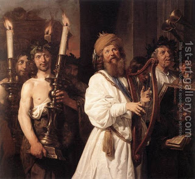

Shevuot (Oaths) 15 - Adding to the City of Jerusalem
One is liable for entering the Temple while impure, whether he enters the original Courtyard or the area that was added later - and here is the procedure for adding to the Courtyard and to the City of Jerusalem.
With the consent of the king, a prophet, Urim VeTumim, and the Sanhedrin of seventy one, they would prepare a Thanksgiving offering and a song. The High Court marches around the perimeter of the area being added, and the two loaves of the Thanksgiving offering in front of them - carried by the kohanim - and all Israel behind them. The Thanksgiving loaves were used because they can only be eaten inside of Jerusalem, and they were very large, made with a few hundred cups of flour. They sang " The Song of Thanksgiving, call out to God everyone on earth. ", accompanied by harps, lyres, and cymbals.
Art: Jan De Bray - David Playing the Harp